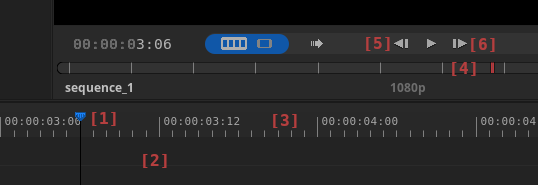
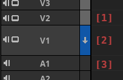

Using Timeline
Navigating Timeline
Scrolling Timeline
- Press and drag scrollbar widget below Timeline
- Scroll Mouse Middle button + CTRL key while on top of Timeline
Zooming Timeline
- Scroll Mouse Middle button on top of Timeline
- Scrolling with Mouse Middle button will scroll towards playhead or cursor position on timeline depending selection in Timeline Properties menu above Tracks Column.
- Scroll with Mouse Middle button + ALT key to reverse current preference of scolling towards Playhead or cursor position on Timeline.
- Click Zoom In, Zoom Out or Zoom Fit buttons in Middlebar.
Setting Scroll / Zoom Settings
- Select Edit > Preferences from application menu and open Editing panel.
- Mouse Middle Button Scroll Action dropdown allows setting whether scroll or zoom is the default scroll button action.
- Mouse Horizontal Scroll Direction dropdown allows reversing timeline scroll direction in relation to mouse scroll direction.
- Mouse Horizontal Scroll Speed dropdown allows setting timeline scroll speed.
Changing Playhead Position
To change the frame being previewed change the position of Playhead [1] on the Timeline.

- Drag with Right Mouse button starting from an empty space in the Timeline [2].
- Drag with Left Mouse button on the Frame Scale [3].
- Drag with Left Mouse on the Monitor Position Bar [4].
- Click Left Arrow key or Right Arrow key to move to next or previous frame.
- Click Up Arrow key or Down Arrow key to move to next or previous cut on topmost active track.
- Click Next [6] or Prev[5] button in Monitor Buttons area to move to next or previous frame.
Also see related chapters Monitor and Preview.
Working With Tracks Active State
In Flowblade effects of some edits are targeted by setting Tracks active states.

[1] Non-active Track.
[2] First active Track.
[3] Active Track.
Effects of Track Active State
- Cuts are only performed on active Tracks.
- Inserts and overwrites from Source Clip Monitor to Timeline are placed on first active Track.
Setting Track Active State
- Click Track Active Switch on the right side of Tracks Column area. Topmost Track Active Switch displays arrow pointing downwards indicating that it is the target of Source Clip Monitor edits.
Selecting clips on Timeline
Selecting single clip
- Click on a clip with Left Mouse button.
Selecting multiple clips on the same track
- Click on a clip with Left Mouse button.
- Click on another clip on the same track with Control + Left Mouse button.
- All clips between clicked clips will be selected.
De-selecting all clips
- Click on Timeline area background.
Box selection
- Press with Left Mouse on Timeline area background.
- Drag mouse to select a group of Clips on one or more Tracks.
- If Clips are selected only on one Track, selection is interpreted as a multi-selection on a single Track, not as a box selection.